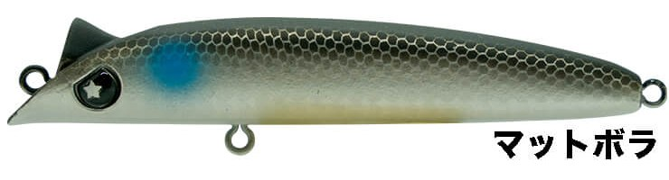
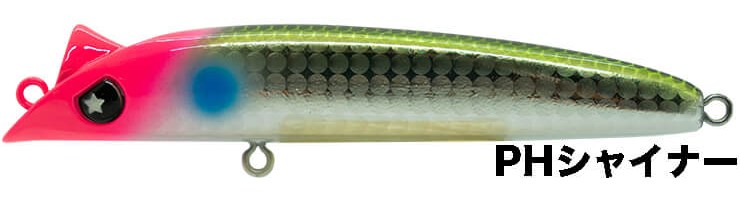
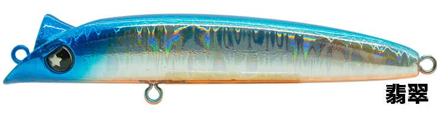
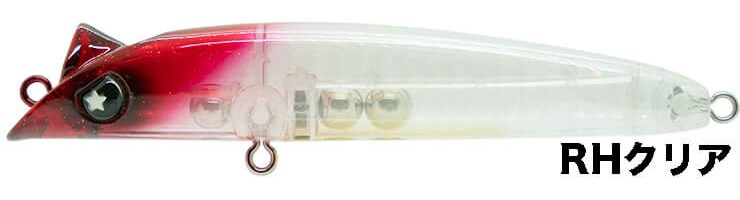

ラプター90SS
（RAPTOR90SS）
ラプター90SSはLEGARE（レガーレ）のスローシンキングミノーです。
柿本岳志氏監修ルアーの第二弾で、メバル用のRAPTOR50SSをシーバス専用に再設計したモデル。特徴的なヘッド形状で流れの強弱やヨレを手元に感じ取れる「サーチ＆キャッチ系」のルアーで、港湾や河川のドリフトを得意とします。

画像出典:LEGARE公式HP
スペック
- メーカー
- LEGARE（レガーレ）
- タイプ
- スローシンキングミノー
- 全長
- 90mm
- 自重
- 12g
- フック
- #6
- リング
- #3
- アクション
- 可変ロールアクション
- ターゲット
- シーバス
- 価格
- 2,300円（公式オンラインストア価格）
▼今すぐチェック

ラプター90SSの特徴
流れを感じて、確実に食わせる“食わせの究極系”
-
流れを感じ取れるヘッド形状
特徴的なヘッド形状で、低速域でもフィールドの変化を手元に繊細に伝えます。流れの強弱・変化・ヨレをサーチしながら釣りができます。
-
速度で変わる可変ロール
低速域では食わせの微ロール、中速域ではロール幅が増えて明滅効果を出すしっかりしたアクションに変化し、「使いやすさ」と「食わせ」を両立しています。
-
ヨレで自然に出るスライド
流れのヨレに合わせて自然にスライドが起き、それがアクションの変化となってバイトチャンスを作ります。流れの中でも暴れない、食わせのアクションをキープします。
ラプター90SSの使い方
基本は流れに乗せたドリフト。アップクロスに投げてラインスラッグを調整しながら、流れの中をゆっくり通します。
低速の微ロールで食わせたいときはゆっくり、明滅で目立たせたいときは中速で巻くと、巻き速度だけでアクションを切り替えられます。
ラプター90SSの得意な状況
港湾や河川のドリフトが得意。デイ・ナイトを問わず、スローシンキングで流れの中にとどめながら、ヨレや明暗の境目を通したい場面に向いています。
ワンポイント
流れの変化を手元で感じられるので、ドリフト中に「重くなった」「軽くなった」場所がヨレや変化のある場所です。そこで巻きを緩めて、ルアーを長く見せるイメージで使ってみてください。
レガーレの小型ルアーの使い分け
| モデル | 全長／自重 | 得意な場面 |
|---|---|---|
| ラプター50SS | 50mm／2.9g | タイトローリングのメバルプラグ。ラプター90SSのもとになったモデル |
| シュリペン70 | 70mm／8g | シンキングペンシル。バチ抜け・マイクロベイトパターンに |
| ラプター90SS | 90mm／12g | スローシンキングミノー。港湾・河川のドリフトに（本記事のモデル） |
| ユニフォース100F | 100mm／17.5〜19g | フローティングミノー。リップの付け替えでレンジを変えられる |
同じレガーレでも、ドリフトで流れを感じながら食わせたいならラプター90SS、バチやマイクロベイトにはシュリペン70、浮かせて引きたいならユニフォース100Fと使い分けましょう。
人気カラー
全15色の中から4色を紹介します（画像は公式のカラーラインナップ画像から切り出したものです）。

マットボラマットな質感のボラカラー。ボラがベイトの河川や港湾で、ナチュラルに見せたいときに。

PHシャイナーピンクヘッドとシャイナー柄の組み合わせ。ナチュラルさとアピールを両立したい場面に。

翡翠ブルー系のホロでフラッシングを出すカラー。デイゲームのサーチに。

RHクリアクリアボディのレッドヘッド。常夜灯まわりや澄み潮で、シルエットを抑えて見せたいときに。
画像出典:LEGARE公式HP
ラプター90SSに似ているルアー
-
 エルドール85SSL
アピア
詳細はこちら＞
エルドール85SSL
アピア
詳細はこちら＞
全長85mm・自重10gのスローシンキングミノー。同じクラスのスローシンキングで、レンジ10〜50cmを引きたいときに。
-
 ラザミン90
ブルーブルー
詳細はこちら＞
ラザミン90
ブルーブルー
詳細はこちら＞
全長90mm・自重8gのI字系ミノー。同じ90mmで、より微波動に見せたいときに。
-
 ブローウィン80S
ブルーブルー
詳細はこちら＞
ブローウィン80S
ブルーブルー
詳細はこちら＞
全長80mm・自重8gのシンキングミノー。S字＋ウォブンロールで、小型ベイトや港湾の小場所に。